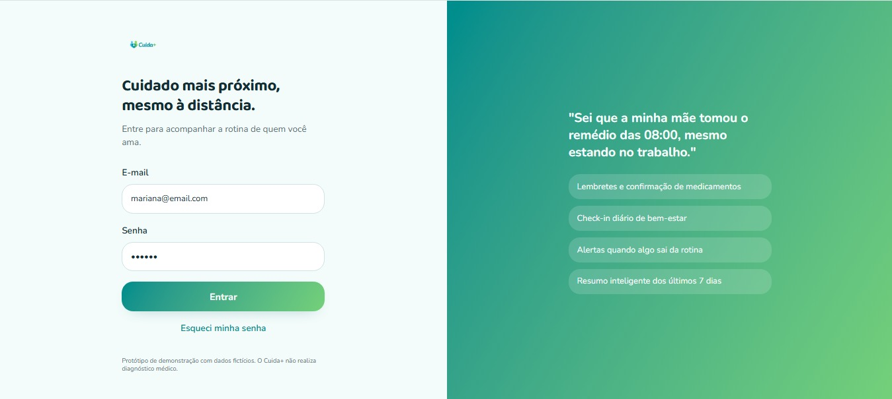

Projeto de Ano

SeCuide+
O Se Cuide + é um aplicativo desenvolvido com o objetivo de auxiliar idosos em sua rotina de cuidados e proporcionar mais segurança, organização e tranquilidade para seus familiares. Por meio da plataforma, é possível acompanhar os horários e relatórios de medicamentos, organizar consultas médicas e registrar informações importantes sobre os cuidados com a saúde. O aplicativo também conta com um sistema de supervisão familiar, permitindo que os responsáveis acompanhem a rotina do idoso e tenham acesso às informações necessárias. Dessa forma, o Se Cuide + busca facilitar o dia a dia, incentivar a autonomia dos idosos e aproximar a família de seus cuidados, utilizando a tecnologia como uma ferramenta de atenção, proteção e bem-estar. Para o desenvolvimento do projeto, foi utilizada a plataforma Base44, que permite criar aplicações por meio de inteligência artificial, facilitando a construção das interfaces e funcionalidades do sistema. Também serão considerados recursos de banco de dados para armazenar informações dos usuários, medicamentos, consultas e relatórios, além de ferramentas de autenticação para garantir o acesso seguro de idosos e familiares.
Ver repositório